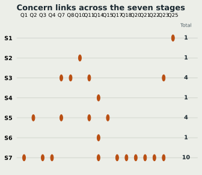

Chapter S3
Results at a glance
Signal Box raised concerns about interpretation, certainty and accountability, while all four legal triggers had no flag.
I used Signal Box from my own Ethical Considerations in AI guide; The method explains its origin and how I applied it.
In short
My first pass raised 17 concerns and 10 no-flags. All four legal-trigger questions had no flag. These are issues for me to investigate, not findings of harm.
Signal Box is my own work, separate from Unit 2; Unit 3 is the first real data project to which I have applied it (where it comes from).
The count
- 17
- concerns raised to investigate
- 10
- no-flags; no concern was raised
- 4
- legal-trigger questions checked; all four had no flag
Three findings to carry forward
- In Unit 2 I framed ethics mainly as privacy. Signal Box suggests privacy is the part my project largely gets right: all four legal triggers had no flag. The wider concerns are about group harm, false certainty and accountability to the people described.
- The main risk is presentation claiming more than the evidence. Firm rankings where the estimates overlap, and measures shown side by side that could be taken as causes. The fix is accuracy, not softening: show uncertainty where it matters and keep to association, not cause.
- I found two good Unit 2 decisions that are claimed but not tested. The model leaves ethnicity and deprivation out of its features, but I have not checked proxy overlap or whether model errors differ between communities. Until I test them, these are intentions rather than evidence.
Every lamp, by checkpoint
![A groups Q1 to Q4, all concerns. B groups Q5 and Q6 as no-flags with legal-trigger marks, Q7 and Q8 as concerns, Q9 as a no-flag, and Q10 and Q11 as concerns. C groups Q12 as a legal-trigger no-flag, Q13 as a no-flag, and Q14 as a concern. D groups Q15 as a concern, Q16 as a no-flag, Q17 and Q18 as concerns, and Q19 as a no-flag. E groups Q20 to Q23, all concerns. F groups Q24 as a no-flag, Q25 as a concern, Q26 as a legal-trigger no-flag, and Q27 as a no-flag. Filled orange markers are concerns; hollow grey markers are no-flags.](../assets/img/second-look/lamp-board.svg)

Text alternative: all 27 answers
The table repeats the Signal Box summary so the question numbers, answers and stage links can be read without the figures. The standalone Signal Box summary is also available.
| Question | Checkpoint | Short question | Lamp | Stages |
|---|---|---|---|---|
| Q1 | A · Purpose and benefit | Shapes a decision that matters to someone's life? | 🟠 concern | Stage 7 |
| Q2 | A · Purpose and benefit | Could a simpler non-AI process do it? | 🟠 concern | Stage 5 |
| Q3 | A · Purpose and benefit | Purpose vague, or likely to grow? | 🟠 concern | Stage 7 |
| Q4 | A · Purpose and benefit | Benefit to me, cost to others? | 🟠 concern | Stage 7 |
| Q5 | B · Data | Information about identifiable people? | ⚪ no flag | cleared |
| Q6 | B · Data | Profiling individuals? | ⚪ no flag | cleared |
| Q7 | B · Data | Sensitive data, or a stand-in for it? | 🟠 concern | Stage 3;Stage 5 |
| Q8 | B · Data | Re-identification by combining fields? | 🟠 concern | Stage 3 |
| Q9 | B · Data | Origin, accuracy or permission unknown? | ⚪ no flag | cleared |
| Q10 | B · Data | Groups missing or thin? | 🟠 concern | Stage 2 |
| Q11 | B · Data | Learning from past human decisions? | 🟠 concern | Stage 3;Stage 5 |
| Q12 | C · Decisions and oversight | Solely automated consequential decision? | ⚪ no flag | cleared |
| Q13 | C · Decisions and oversight | Reviewer lacks time or authority to overrule? | ⚪ no flag | cleared |
| Q14 | C · Decisions and oversight | Output treated as proof, not a prompt? | 🟠 concern | Stage 4;Stage 6;Stage 7 |
| Q15 | D · People affected | Errors fall more on some groups? | 🟠 concern | Stage 5 |
| Q16 | D · People affected | Affected without knowing AI was involved? | ⚪ no flag | cleared |
| Q17 | D · People affected | Can't understand, correct or challenge the result? | 🟠 concern | Stage 7 |
| Q18 | D · People affected | Affected people left out of design and testing? | 🟠 concern | Stage 7 |
| Q19 | D · People affected | Changes jobs, pace or monitoring? | ⚪ no flag | cleared |
| Q20 | E · Safety and robustness | Could failure cause physical or psychological harm? | 🟠 concern | Stage 7 |
| Q21 | E · Safety and robustness | Tested only in a demo, not real use? | 🟠 concern | Stage 7 |
| Q22 | E · Safety and robustness | No tested way to pause, override or fall back? | 🟠 concern | Stage 7 |
| Q23 | E · Safety and robustness | Could it be misused or used out of purpose? | 🟠 concern | Stage 3;Stage 7 |
| Q24 | F · Responsibility and law | No named owner, monitor or stop authority? | ⚪ no flag | cleared |
| Q25 | F · Responsibility and law | Depends on a supplier's model or data I can't inspect? | 🟠 concern | Stage 1 |
| Q26 | F · Responsibility and law | EU AI Act high-risk use? | ⚪ no flag | cleared |
| Q27 | F · Responsibility and law | Used in a different population or country? | ⚪ no flag | cleared |
Coming next: a stage-by-stage walk-through of the Unit 2 project, starting with Stage 1.